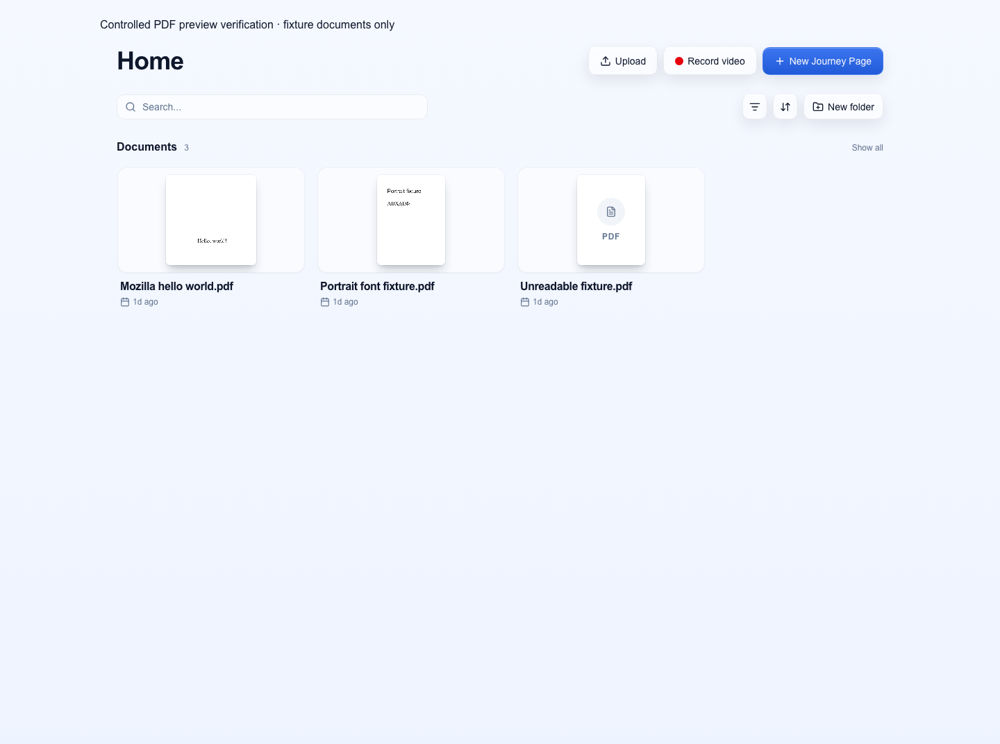
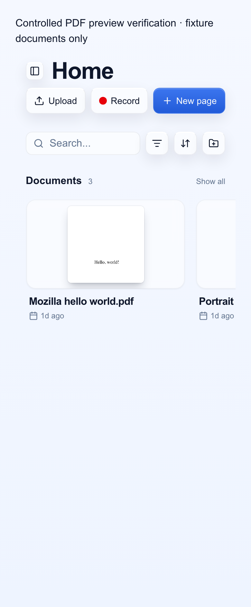

PDF library previews
Document cards now render the PDF's first page. These screenshots use local fixture documents, including an unreadable PDF that keeps its fallback.

Actual Home route and PDF renderer. API records are mocked. This change has not been deployed to production.
Phone width
